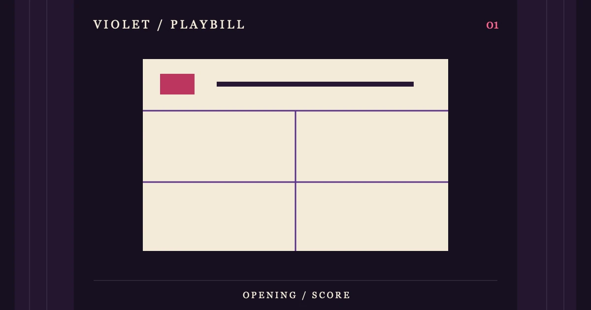

OPENING PERFORMANCE / 01
[[S1_TITLE]]
[[S1_INTRO]]
[[S1_H2_1]]
[[S1_TEXT_1]]
[[S1_M_LABEL]]
- [[S1_M_LABEL_1]]
- [[S1_M_TEXT_1]]
- [[S1_M_LABEL_2]]
- [[S1_M_TEXT_2]]
- [[S1_M_LABEL_3]]
- [[S1_M_TEXT_3]]
- [[S1_M_LABEL_4]]
- [[S1_M_TEXT_4]]
[[S1_H2_2]]
[[S1_TEXT_2]]
小屏可在表格内横向滚动。
| [[S1_TABLE_COL_1]] | [[S1_TABLE_COL_2]] | [[S1_TABLE_COL_3]] |
|---|---|---|
| [[S1_TABLE_ROW_1]] | [[S1_TABLE_CELL_1_1]] | [[S1_TABLE_CELL_1_2]] |
| [[S1_TABLE_ROW_2]] | [[S1_TABLE_CELL_2_1]] | [[S1_TABLE_CELL_2_2]] |
| [[S1_TABLE_ROW_3]] | [[S1_TABLE_CELL_3_1]] | [[S1_TABLE_CELL_3_2]] |
[[S1_H2_3]]
[[S1_TEXT_3]]
[[S1_QUOTE]]
[[S1_QUOTE_ATTRIBUTION]]
[[S1_H2_4]]
[[S1_TEXT_4]]
[[S1_H2_5]]
[[S1_TEXT_5]]
常见问题
[[S1_FAQ_Q1]]
[[S1_FAQ_A1]]
[[S1_FAQ_Q2]]
[[S1_FAQ_A2]]
引用来源
- [[S1_SOURCE_LABEL_1]]
[[S1_SOURCE_NOTE_1]]
- [[S1_SOURCE_LABEL_2]]
[[S1_SOURCE_NOTE_2]]
资料核对：